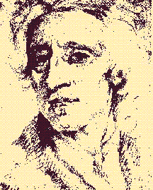
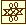

|  |
 CONTENTS
Announcing . . .
Updates to John Locke sites available as blog, RSS feed
The Clarendon Edition of the Works of John Locke
Early citations of Locke’s works
Recent Additions to the Bibliography
Part One. Works by Locke
Early Editions of Locke’s Works to 1800
Language Index to Translations of Locke’s Works
Clarendon Edition of the Works of John Locke
Part Two. Writings about Locke
2. Biography and General Works
8. Political Economy: Money, Interest, Trade and Colonies
Addendum: John Locke Tercentenary, 2004
PREFACE
The John Locke Bibliography is intended as a comprehensive listing of publications by or about John Locke. I began to compile the bibliography in 1975; by the end of 2005, it contained well over 9000 entries. The first result of this project was a checklist of editions and translations of Locke’s works, published in 1985 (now updated as Part One of this bibliography). In 1994, I began creating the John Locke Bibliography on the World Wide Web, beginning with recent publications and gradually adding the rest of the material that I have collected since 1975. This process was completed in December 2005; the John Locke Bibliography is at last complete.
A major component of the bibliography is the recording of recently-published titles, as a complement to the lists published by Roland Hall in the annual Locke Studies. I will continue to add any new items that I discover or of which I am informed. The entries will be cumulated. A chronological list of items added to the bibliography over the past 12 months can be found in the “Recent additions to the bibliography.”
I welcome comments on this bibliography, as well as suggestions for inclusion.
Organization of the Bibliography
This bibliography is organized into two parts. Part One, “Works by John Locke,” is an updated version of my The Works of John Locke, which was published by Greenwood Press in 1985. This part is now a complete checklist of editions and translations (although some entries need to be corrected and some publications since 1985 have yet to be added). Researchers seeking more detailed information on editions and translations published before 1800, should consult Jean S. Yolton’s John Locke : a descriptive bibliography (Thoemmes Press, 1998).
Part Two, “Writings about Locke,” is divided into twelve topical chapters. Arrangement in each chapter is by date of publication and then by author’s name. In two chapters (3, “Philosophy,” and 7, “Politics and Government“), there are separate pages for each year. There are three indexes: “Name/Title” and “Subject” cover the entire bibliography; the “Language Index,” only translations of Locke’s works. I have provided a variety of hypertext links between related entries and between entries in the bibliography and the index. There are also hypertext navigational aids at the top and bottom of each “page.”
Design Notes
The John Locke Bibliography is encoded using HTML version 4.0. It makes extensive use of Cascading Style Sheets version 1 (CSS). It therefore requires the use of version 4.0 (or later) of either Microsoft Internet Explorer or Netscape Navigator. (It was designed using Navigator, but tested with both browsers.) Displays in earlier versions of these browsers will be unpredictable and probably unsatisfactory.
Typeface and type size have been specified for virtually every bit of text on the site. The basic typeface is Garamond, which gives the text an “old style” look. Font sizes are always specified as percentages of the browser default; if the text appears too large or too small, you can adjust this by changing your browser’s default text size.
The master graphic used throughout this site is my own rendering of Locke’s “paraph” — the cryptic design that Locke inscribed in some of the books in his library. See The library of John Locke / by John Harrison and Peter Laslett. – 2nd ed. – Oxford : Clarendon Press, 1971. – p. 41-42.
John Locke Chronology
John Locke Chronology is a calendar of datable events in the life, and material in the papers, of John Locke.
The first content being added to the John Locke Chronology consists of information about Locke’s whereabouts. Using his Journals and Correspondence, it is possible to determine where Locke was on any given day for a great part of his life. Detailed evidence begins in November 1675, when Locke began his Journal as he embarked on a trip to France. From that point until the end of his life, Locke kept a Journal. Although the amount of detail recorded diminishes, particularly after his return to England from Holland in 1689, it is still possible to track most of his movements. Locke’s correspondence fills in some of the gaps, and also provides some evidence of his movements before 1675.
John Locke Manuscripts
John Locke Manuscripts is a companion to the John Locke Bibliography. The site is designed to serve as a listing of transcriptions of Locke manuscripts, linked to the items in the Bibliography in which they appear, as well as to serve as a guide to the location and content of Locke manuscripts.
The site consists of two main sections: a chronological listing of individual manuscript pieces, and a guide to manuscript collections arranged by repository. Name and Title indexes are provided. A general link between the John Locke Manuscripts and the John Locke Bibliography is included in a button at the foot of each page on both sites.
A major feature of the chronological listing for each manuscript piece is a list of publications in which transcriptions of the piece (or of translations) have appeared. These lists are linked to the corresponding items in the John Locke Bibliography. Distinctive linking colors are used: links to the John Locke Bibliography are in brown; links to the John Locke Manuscripts are in green. For an example, see the listing for Locke’s paper “For a Generall Naturalization,” which is cross-linked with a number of items in the John Locke Bibliography.
Locke Studies
Locke Studies is an annual journal devoted to contemporary research on any aspect of the life and work of the great English philosopher John Locke (1632–1704). The journal is unique in being the only one in the world devoted entirely to Locke scholarship.
The journal publishes articles and research notes on all aspects of Locke’s life and work, and on related authors; also queries on unresolved points in Locke, or unsolved problems. Submissions may be made in English, French, German, or Italian. All articles are blind peer-reviewed.
From 1970 to 2000 the journal was published as The Locke Newsletter. Beginning with the 2001 issue, the journal was renamed Locke Studies. The journal was founded and edited for 43 years by Roland Hall; since 2013, Locke Studies has been edited by Timothy Stanton. During 2018-2019, Benjamin Hill will serve as interim editor, and a new editor will be appointed by the new Editorial Board to begin in 2020 (further details).
For more information, including how to subscribe, see the Locke Studies website at https://ojs.scholarsportal.info/western/index.php/locke/index.
All of the back issues of Locke Studies and The Locke Newsletter are now freely available on the Locke Studies website. Each issue is available as an optical scan, word-searchable and freely downloadable. The next phase of the digitization project is to create separate files for every article, each assigned a DOI and available as a text-based PDF. For more information about the project, see the announcement of 13 January 2021.
The contents of each issue, with links to the articles and to the corresponding entries in the John Locke Bibliography are given through the links below:
Note: The portrait of Locke above is a drawing by an unidentified artist, after the painting by Godfrey Kneller (September 1704). The drawing was in the possession of Mr. Paul Mellon and is now in the collections of the Yale Center for British Art.